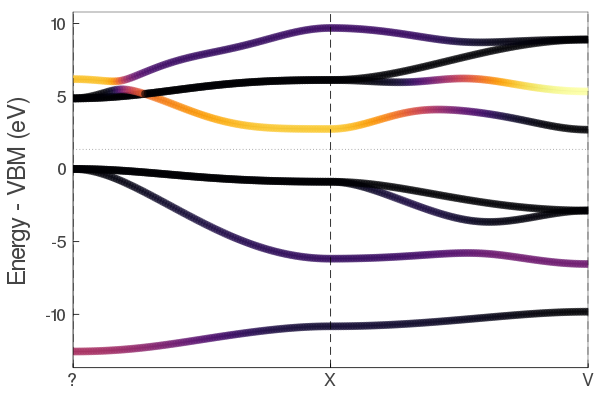

Running tight-binding calculations
How to run tight-binding calculations using the pre-fit tight-binding coefficients. Note, only elemental and binary systems are currently supported.
Running a julia function for the first time will compile the function. Future runs will be much faster.
Create a crystal object
Consists of lattice vectors, atomic positions, and atom types. Current units are Bohr only, this will change.
using TightlyBound
A = [4.0 4.0 0.0;4.0 0.0 4.0;0.0 4.0 4.0];
pos = [0.0 0.0 0.0];
types = ["Al"];
fcc_al = makecrys(A, pos, types)A1= 4.00000 4.00000 0.00000 A2= 4.00000 0.00000 4.00000 A3= 0.00000 4.00000 4.00000 Al 0.00000 0.00000 0.00000
Alternatively, you can read the positions from a simple POSCAR or Quantum Espresso input file.
rbcl = makecrys("../src/POSCAR_rbcl")A1= 7.38812 -0.00000 0.00000 A2= -0.00000 7.38812 0.00000 A3= 0.00000 -0.00000 7.38812 Rb 0.00000 0.00000 0.00000 Cl 0.50000 0.50000 0.50000
Do an self-consistent calculation.
Gets the energy and charge density.
alp = makecrys("../src/POSCAR_alp")
energy, tbc_alp = scf_energy(alp);
println("The energy is $energy Ryd")
Begin scf_energy-------------
Load TB parameters from file
prepare atoms ["Al", "P"]
add_to_database Set(["Al"])
found /home/runner/work/TightlyBound.jl/TightlyBound.jl/src/../dats/pbesol/v1.0/coef.el.2bdy.Al.xml.gz
added to cache ("Al", "Al")
found /home/runner/work/TightlyBound.jl/TightlyBound.jl/src/../dats/pbesol/v1.0/coef.el.3bdy.Al.xml.gz
added to cache ("Al", "Al", "Al")
add_to_database Set(["Al", "P"])
found /home/runner/work/TightlyBound.jl/TightlyBound.jl/src/../dats/pbesol/v1.0/coef.el.2bdy.Al.P.xml.gz
added to cache ("Al", "P") twobody
found /home/runner/work/TightlyBound.jl/TightlyBound.jl/src/../dats/pbesol/v1.0/coef.el.3bdy.Al.P.xml.gz
added to cache ("Al", "P") threebody
add_to_database Set(["P"])
found /home/runner/work/TightlyBound.jl/TightlyBound.jl/src/../dats/pbesol/v1.0/coef.el.2bdy.P.xml.gz
added to cache ("P", "P")
found /home/runner/work/TightlyBound.jl/TightlyBound.jl/src/../dats/pbesol/v1.0/coef.el.3bdy.P.xml.gz
added to cache ("P", "P", "P")
construct
-----
Construct tight-binding model from crystal structure
distances
3.793941 seconds (6.13 M allocations: 299.426 MiB, 3.40% gc time)
CHECK FRONTIER - everything fine
2body
2.002716 seconds (4.59 M allocations: 227.626 MiB, 4.93% gc time)
3body
1.353458 seconds (4.51 M allocations: 213.772 MiB, 5.89% gc time)
onsite
-----
9.834141 seconds (17.79 M allocations: 867.875 MiB, 3.38% gc time)
------
Do SCF
Mixing mode: pulay
Get initial guess from tbc
DQ: [0.0, -0.0]
Parameters:
smearing = 0.01 conv_thr = 1.0e-5, iters = 75, mix = 0.8, grid = missing
START SCF ----------------
SCF CALC 0001 energy -0.76050539
SCF CALC 0002 energy -0.75839408 en_diff: 2.111318E-03 dq_diff: 9.782338E-01
SCF CALC 0003 energy -0.75704424 en_diff: 1.349838E-03 dq_diff: 7.800602E-01
SCF CALC 0004 energy -0.75146164 en_diff: 5.582598E-03 dq_diff: 1.566167E-01
SCF CALC 0005 energy -0.74996991 en_diff: 1.491732E-03 dq_diff: 3.127848E-02
SCF CALC 0006 energy -0.74966297 en_diff: 3.069377E-04 dq_diff: 6.258844E-03
SCF CALC 0007 energy -0.74960074 en_diff: 6.222484E-05 dq_diff: 1.251561E-03
SCF CALC 0008 energy -0.74958830 en_diff: 1.244401E-05 dq_diff: 2.503266E-04
YES convergence in 8 iters, energy -0.7495883008255473 dq = [-1.113, 1.113]
END SCF ------------------
scf_energy success, done
The energy is -0.7495883008255473 RydThis returns the non-magnetic atomization energy, and a tight-binding object with the SCF electron density calculated.
Plot the band structure.
Using the tight-binding object from above. Note: SCF must be done first to get meaningful results.
plot_bandstr(tbc_alp, do_display=false);plot_bandstr clear align vbm color = blue markersize = 0

Use do_display=true to produce an interactive plot.
The default just picks some random kpoints, but you can add your own kpath. We also project onto the s orbital of Al.
kpath=[0.0 0.0 0.0; 0.5 0.5 0.5; 0.0 0.5 0.5];
knames=["Γ", "X", "V"];
plot_bandstr(tbc_alp, kpath=kpath, names=knames, npts=100, proj_orbs=[:s], proj_types=["Al"], do_display=false);proj_inds [1] plot_bandstr clear align vbm

Calculate force / stress
energy, force, stress, tbc = scf_energy_force_stress(tbc_alp);
println("energy $energy")
println()
println("Forces")
show(stdout, "text/plain", force)
println()
println("Stress")
show(stdout, "text/plain", stress)prepare atoms ["Al", "P"]
Calculate Force, Stress (no scf)
0.077540 seconds (773.52 k allocations: 32.718 MiB, 18.02% gc time)
0.055368 seconds (400.28 k allocations: 22.209 MiB, 23.64% gc time)
0.151556 seconds (1.52 M allocations: 59.366 MiB, 8.11% gc time)
3.101975 seconds (5.24 M allocations: 325.540 MiB, 3.94% gc time)
4.829717 seconds (9.79 M allocations: 418.729 MiB, 3.04% gc time)
3.138400 seconds (6.80 M allocations: 344.892 MiB, 4.06% gc time)
0.155747 seconds (842.89 k allocations: 111.138 MiB, 13.44% gc time)
0.079269 seconds (400.28 k allocations: 44.813 MiB, 26.79% gc time)
0.183746 seconds (1.52 M allocations: 114.955 MiB, 10.64% gc time)
0.064971 seconds (773.52 k allocations: 32.718 MiB)
0.044133 seconds (400.28 k allocations: 22.209 MiB)
0.154272 seconds (1.52 M allocations: 59.366 MiB, 10.76% gc time)
done
----
energy -0.7495858097098367
Forces
2×3 Array{Float64,2}:
2.00584e-17 1.53835e-17 1.68581e-17
0.0 0.0 0.0
Stress
3×3 Array{Float64,2}:
0.00143705 0.0 0.0
0.0 0.00143705 0.0
0.0 0.0 0.00143705Can also be called directly on a new crystal structure instead of a tb_crys object.
Relax structure
crys_new, tbc_updated, energy, force, stress = relax_structure(alp);
println("Energy new $energy")
println()
println("Force")
show(stdout, "text/plain", force)
println()
println("Stress")
show(stdout, "text/plain", stress)prepare atoms ["Al", "P"]
-----
Construct tight-binding model from crystal structure
distances
0.060431 seconds (773.52 k allocations: 32.718 MiB)
CHECK FRONTIER - everything fine
2body
0.038592 seconds (400.28 k allocations: 22.209 MiB)
3body
0.166087 seconds (1.52 M allocations: 59.366 MiB, 14.66% gc time)
onsite
-----
------
Do SCF
Mixing mode: pulay
Get initial guess from tbc
DQ: [0.0, -0.0]
Parameters:
smearing = 0.01 conv_thr = 1.0e-5, iters = 75, mix = 0.8, grid = missing
START SCF ----------------
SCF CALC 0001 energy -0.76050539
SCF CALC 0002 energy -0.75839408 en_diff: 2.111318E-03 dq_diff: 9.782338E-01
SCF CALC 0003 energy -0.75704424 en_diff: 1.349838E-03 dq_diff: 7.800602E-01
SCF CALC 0004 energy -0.75146164 en_diff: 5.582598E-03 dq_diff: 1.566167E-01
SCF CALC 0005 energy -0.74996991 en_diff: 1.491732E-03 dq_diff: 3.127848E-02
SCF CALC 0006 energy -0.74966297 en_diff: 3.069377E-04 dq_diff: 6.258844E-03
SCF CALC 0007 energy -0.74960074 en_diff: 6.222484E-05 dq_diff: 1.251561E-03
SCF CALC 0008 energy -0.74958830 en_diff: 1.244401E-05 dq_diff: 2.503266E-04
YES convergence in 8 iters, energy -0.7495883008255473 dq = [-1.113, 1.113]
END SCF ------------------
starting vec
[0.0, 0.0, 0.0, 0.25, 0.25, 0.25, 4.9132898822133235, 4.9132898822133235, 0.0, 4.9132898822133235, 0.0, 4.9132898822133235, 0.0, 4.9132898822133235, 4.9132898822133235]
0.059445 seconds (773.52 k allocations: 32.718 MiB)
0.042536 seconds (400.28 k allocations: 22.209 MiB)
0.154806 seconds (1.52 M allocations: 59.366 MiB, 12.86% gc time)
0.145580 seconds (842.89 k allocations: 111.138 MiB, 9.99% gc time)
0.070428 seconds (400.28 k allocations: 44.813 MiB, 21.66% gc time)
0.174176 seconds (1.52 M allocations: 114.955 MiB, 9.85% gc time)
0.164091 seconds (842.89 k allocations: 111.138 MiB, 18.93% gc time)
0.057363 seconds (400.28 k allocations: 44.813 MiB)
0.205883 seconds (1.52 M allocations: 114.955 MiB, 18.27% gc time)
0.066422 seconds (773.52 k allocations: 32.718 MiB)
0.061452 seconds (400.28 k allocations: 22.209 MiB, 26.14% gc time)
0.142365 seconds (1.52 M allocations: 59.366 MiB)
FCALL 1 en: -0.7495883008255473 fsum: 5.3082393404280665e-17 ssum: 0.004311079231453531 xxxxxxxxxxxxxxxxxxxxxxxxxxxxxxx
0.066775 seconds (569.69 k allocations: 25.801 MiB, 29.42% gc time)
0.033526 seconds (317.07 k allocations: 17.615 MiB)
0.133956 seconds (1.18 M allocations: 45.882 MiB, 17.76% gc time)
START SCF ----------------
SCF CALC 0001 energy -0.77225730
SCF CALC 0002 energy -0.77329722 en_diff: 1.039922E-03 dq_diff: 5.563325E-02
SCF CALC 0003 energy -0.77357457 en_diff: 2.773504E-04 dq_diff: 4.323663E-02
SCF CALC 0004 energy -0.77430903 en_diff: 7.344623E-04 dq_diff: 8.940491E-03
SCF CALC 0005 energy -0.77446117 en_diff: 1.521359E-04 dq_diff: 1.769047E-03
SCF CALC 0006 energy -0.77449098 en_diff: 2.981293E-05 dq_diff: 3.550355E-04
SCF CALC 0007 energy -0.77449697 en_diff: 5.990601E-06 dq_diff: 7.092859E-05
YES convergence in 7 iters, energy -0.7744969723754964 dq = [-1.024, 1.024]
END SCF ------------------
0.052588 seconds (569.69 k allocations: 25.801 MiB)
0.037010 seconds (317.07 k allocations: 17.615 MiB)
0.128229 seconds (1.18 M allocations: 45.882 MiB, 14.16% gc time)
0.124318 seconds (632.46 k allocations: 95.555 MiB, 14.87% gc time)
0.065864 seconds (317.07 k allocations: 35.524 MiB, 31.64% gc time)
0.157249 seconds (1.18 M allocations: 88.893 MiB, 13.94% gc time)
0.121652 seconds (632.46 k allocations: 95.555 MiB, 14.25% gc time)
0.046184 seconds (317.07 k allocations: 35.524 MiB)
0.144402 seconds (1.18 M allocations: 88.893 MiB, 13.96% gc time)
0.069315 seconds (569.69 k allocations: 25.801 MiB, 30.59% gc time)
0.033444 seconds (317.07 k allocations: 17.615 MiB)
0.118768 seconds (1.18 M allocations: 45.882 MiB)
FCALL 2 en: -0.7744969723754964 fsum: 4.5849968358887336e-18 ssum: 0.0016069425636169444 xxxxxxxxxxxxxxxxxxxxxxxxxxxxxxx
START SCF ----------------
SCF CALC 0001 energy -0.77225730
SCF CALC 0002 energy -0.77329722 en_diff: 1.039922E-03 dq_diff: 5.563325E-02
SCF CALC 0003 energy -0.77357457 en_diff: 2.773504E-04 dq_diff: 4.323663E-02
SCF CALC 0004 energy -0.77430903 en_diff: 7.344623E-04 dq_diff: 8.940491E-03
SCF CALC 0005 energy -0.77446117 en_diff: 1.521359E-04 dq_diff: 1.769047E-03
SCF CALC 0006 energy -0.77449098 en_diff: 2.981293E-05 dq_diff: 3.550355E-04
SCF CALC 0007 energy -0.77449697 en_diff: 5.990601E-06 dq_diff: 7.092859E-05
YES convergence in 7 iters, energy -0.7744969723754964 dq = [-1.024, 1.024]
END SCF ------------------
0.031070 seconds (380.37 k allocations: 19.095 MiB)
0.026670 seconds (238.91 k allocations: 13.274 MiB)
0.069945 seconds (703.83 k allocations: 27.531 MiB)
START SCF ----------------
SCF CALC 0001 energy -0.71432966
SCF CALC 0002 energy -0.72644196 en_diff: 1.211230E-02 dq_diff: 2.715953E-01
SCF CALC 0003 energy -0.72887595 en_diff: 2.433985E-03 dq_diff: 2.027603E-01
SCF CALC 0004 energy -0.73349083 en_diff: 4.614888E-03 dq_diff: 4.749218E-02
SCF CALC 0005 energy -0.73460707 en_diff: 1.116240E-03 dq_diff: 8.334104E-03
SCF CALC 0006 energy -0.73478124 en_diff: 1.741699E-04 dq_diff: 1.817437E-03
SCF CALC 0007 energy -0.73482172 en_diff: 4.047196E-05 dq_diff: 3.394380E-04
SCF CALC 0008 energy -0.73482890 en_diff: 7.180810E-06 dq_diff: 7.122809E-05
YES convergence in 8 iters, energy -0.7348288961050234 dq = [-0.633, 0.633]
END SCF ------------------
0.036436 seconds (380.37 k allocations: 19.095 MiB)
0.027161 seconds (238.91 k allocations: 13.274 MiB)
0.072586 seconds (703.83 k allocations: 27.531 MiB)
0.059411 seconds (395.02 k allocations: 59.446 MiB)
0.035758 seconds (238.91 k allocations: 26.771 MiB)
0.097453 seconds (703.83 k allocations: 53.297 MiB, 21.01% gc time)
0.078620 seconds (395.02 k allocations: 59.446 MiB, 25.85% gc time)
0.037145 seconds (238.91 k allocations: 26.771 MiB)
0.078456 seconds (703.83 k allocations: 53.297 MiB)
0.032490 seconds (380.37 k allocations: 19.095 MiB)
0.026847 seconds (238.91 k allocations: 13.274 MiB)
0.071371 seconds (703.83 k allocations: 27.531 MiB)
FCALL 3 en: -0.7348288961050234 fsum: 3.5054240341946556e-15 ssum: 0.0022134653995154836 xxxxxxxxxxxxxxxxxxxxxxxxxxxxxxx
START SCF ----------------
SCF CALC 0001 energy -0.71432966
SCF CALC 0002 energy -0.72644196 en_diff: 1.211230E-02 dq_diff: 2.715953E-01
SCF CALC 0003 energy -0.72887595 en_diff: 2.433985E-03 dq_diff: 2.027603E-01
SCF CALC 0004 energy -0.73349083 en_diff: 4.614888E-03 dq_diff: 4.749218E-02
SCF CALC 0005 energy -0.73460707 en_diff: 1.116240E-03 dq_diff: 8.334104E-03
SCF CALC 0006 energy -0.73478124 en_diff: 1.741699E-04 dq_diff: 1.817437E-03
SCF CALC 0007 energy -0.73482172 en_diff: 4.047196E-05 dq_diff: 3.394380E-04
SCF CALC 0008 energy -0.73482890 en_diff: 7.180810E-06 dq_diff: 7.122809E-05
YES convergence in 8 iters, energy -0.7348288961050234 dq = [-0.633, 0.633]
END SCF ------------------
0.059802 seconds (552.86 k allocations: 25.289 MiB, 20.94% gc time)
0.033257 seconds (303.63 k allocations: 16.858 MiB)
0.117245 seconds (1.16 M allocations: 45.229 MiB)
START SCF ----------------
SCF CALC 0001 energy -0.78689169
SCF CALC 0002 energy -0.78411221 en_diff: 2.779486E-03 dq_diff: 1.756262E-01
SCF CALC 0003 energy -0.78330555 en_diff: 8.066576E-04 dq_diff: 1.353972E-01
SCF CALC 0004 energy -0.78113762 en_diff: 2.167931E-03 dq_diff: 2.868670E-02
SCF CALC 0005 energy -0.78062865 en_diff: 5.089731E-04 dq_diff: 5.572243E-03
SCF CALC 0006 energy -0.78053085 en_diff: 9.779130E-05 dq_diff: 1.129435E-03
SCF CALC 0007 energy -0.78051078 en_diff: 2.007684E-05 dq_diff: 2.244524E-04
SCF CALC 0008 energy -0.78050681 en_diff: 3.971788E-06 dq_diff: 4.502473E-05
YES convergence in 8 iters, energy -0.7805068059999789 dq = [-0.878, 0.878]
END SCF ------------------
0.051636 seconds (552.87 k allocations: 25.289 MiB)
0.050472 seconds (303.63 k allocations: 16.858 MiB, 31.64% gc time)
0.101582 seconds (1.16 M allocations: 45.229 MiB)
0.114719 seconds (591.98 k allocations: 83.203 MiB, 19.79% gc time)
0.045302 seconds (303.63 k allocations: 33.996 MiB)
0.147611 seconds (1.16 M allocations: 87.631 MiB, 16.13% gc time)
0.113596 seconds (591.98 k allocations: 83.203 MiB, 19.76% gc time)
0.044780 seconds (303.63 k allocations: 33.996 MiB)
0.144980 seconds (1.16 M allocations: 87.631 MiB, 16.32% gc time)
0.047553 seconds (552.87 k allocations: 25.289 MiB)
0.055369 seconds (303.63 k allocations: 16.858 MiB, 43.25% gc time)
0.101552 seconds (1.16 M allocations: 45.229 MiB)
FCALL 4 en: -0.7805068059999789 fsum: 5.266901406241614e-17 ssum: 0.000565236435879087 xxxxxxxxxxxxxxxxxxxxxxxxxxxxxxx
START SCF ----------------
SCF CALC 0001 energy -0.78689169
SCF CALC 0002 energy -0.78411221 en_diff: 2.779486E-03 dq_diff: 1.756262E-01
SCF CALC 0003 energy -0.78330555 en_diff: 8.066576E-04 dq_diff: 1.353972E-01
SCF CALC 0004 energy -0.78113762 en_diff: 2.167931E-03 dq_diff: 2.868670E-02
SCF CALC 0005 energy -0.78062865 en_diff: 5.089731E-04 dq_diff: 5.572243E-03
SCF CALC 0006 energy -0.78053085 en_diff: 9.779130E-05 dq_diff: 1.129435E-03
SCF CALC 0007 energy -0.78051078 en_diff: 2.007684E-05 dq_diff: 2.244524E-04
SCF CALC 0008 energy -0.78050681 en_diff: 3.971788E-06 dq_diff: 4.502473E-05
YES convergence in 8 iters, energy -0.7805068059999789 dq = [-0.878, 0.878]
END SCF ------------------
0.048776 seconds (569.70 k allocations: 25.801 MiB)
0.043216 seconds (317.45 k allocations: 17.621 MiB, 27.91% gc time)
0.117697 seconds (1.18 M allocations: 45.882 MiB, 10.55% gc time)
START SCF ----------------
SCF CALC 0001 energy -0.78270180
SCF CALC 0002 energy -0.78226225 en_diff: 4.395563E-04 dq_diff: 2.246715E-02
SCF CALC 0003 energy -0.78214460 en_diff: 1.176472E-04 dq_diff: 1.733413E-02
SCF CALC 0004 energy -0.78184132 en_diff: 3.032788E-04 dq_diff: 3.647883E-03
SCF CALC 0005 energy -0.78177471 en_diff: 6.660978E-05 dq_diff: 7.137517E-04
SCF CALC 0006 energy -0.78176185 en_diff: 1.286186E-05 dq_diff: 1.440257E-04
YES convergence in 6 iters, energy -0.7817618498965497 dq = [-0.911, 0.911]
END SCF ------------------
0.052124 seconds (569.70 k allocations: 25.801 MiB)
0.046654 seconds (317.45 k allocations: 17.621 MiB, 25.93% gc time)
0.124762 seconds (1.18 M allocations: 45.882 MiB, 10.30% gc time)
0.159225 seconds (645.66 k allocations: 96.304 MiB, 16.53% gc time)
0.045521 seconds (317.45 k allocations: 35.542 MiB)
0.133849 seconds (1.18 M allocations: 88.893 MiB, 11.26% gc time)
0.131904 seconds (632.48 k allocations: 95.615 MiB, 19.94% gc time)
0.047992 seconds (317.45 k allocations: 35.542 MiB)
0.155731 seconds (1.18 M allocations: 88.893 MiB, 18.27% gc time)
0.050441 seconds (569.70 k allocations: 25.801 MiB)
0.043169 seconds (317.45 k allocations: 17.621 MiB, 28.01% gc time)
0.124662 seconds (1.18 M allocations: 45.882 MiB, 10.94% gc time)
FCALL 5 en: -0.7817618498965497 fsum: 1.0218666945476237e-16 ssum: 0.00017826889812355698 xxxxxxxxxxxxxxxxxxxxxxxxxxxxxxx
START SCF ----------------
SCF CALC 0001 energy -0.78270180
SCF CALC 0002 energy -0.78226225 en_diff: 4.395563E-04 dq_diff: 2.246715E-02
SCF CALC 0003 energy -0.78214460 en_diff: 1.176472E-04 dq_diff: 1.733413E-02
SCF CALC 0004 energy -0.78184132 en_diff: 3.032788E-04 dq_diff: 3.647883E-03
SCF CALC 0005 energy -0.78177471 en_diff: 6.660978E-05 dq_diff: 7.137517E-04
SCF CALC 0006 energy -0.78176185 en_diff: 1.286186E-05 dq_diff: 1.440257E-04
YES convergence in 6 iters, energy -0.7817618498965497 dq = [-0.911, 0.911]
END SCF ------------------
0.054405 seconds (685.55 k allocations: 29.640 MiB)
0.045727 seconds (373.37 k allocations: 20.685 MiB)
0.142252 seconds (1.31 M allocations: 51.055 MiB, 11.70% gc time)
START SCF ----------------
SCF CALC 0001 energy -0.77413559
SCF CALC 0002 energy -0.77287950 en_diff: 1.256094E-03 dq_diff: 8.611209E-02
SCF CALC 0003 energy -0.77252038 en_diff: 3.591158E-04 dq_diff: 6.710663E-02
SCF CALC 0004 energy -0.77151040 en_diff: 1.009986E-03 dq_diff: 1.379332E-02
SCF CALC 0005 energy -0.77129349 en_diff: 2.169084E-04 dq_diff: 2.734897E-03
SCF CALC 0006 energy -0.77125048 en_diff: 4.301139E-05 dq_diff: 5.483511E-04
SCF CALC 0007 energy -0.77124183 en_diff: 8.646559E-06 dq_diff: 1.095870E-04
YES convergence in 7 iters, energy -0.7712418323561931 dq = [-1.044, 1.044]
END SCF ------------------
0.073388 seconds (685.56 k allocations: 29.640 MiB, 16.39% gc time)
0.039643 seconds (373.37 k allocations: 20.685 MiB)
0.144926 seconds (1.31 M allocations: 51.055 MiB, 11.86% gc time)
0.135892 seconds (755.43 k allocations: 105.916 MiB, 10.92% gc time)
0.071944 seconds (373.37 k allocations: 41.755 MiB, 23.46% gc time)
0.163355 seconds (1.31 M allocations: 98.934 MiB, 10.87% gc time)
0.138131 seconds (755.43 k allocations: 105.916 MiB, 11.50% gc time)
0.072284 seconds (373.37 k allocations: 41.755 MiB, 23.73% gc time)
0.166681 seconds (1.31 M allocations: 98.934 MiB, 11.19% gc time)
0.078136 seconds (685.56 k allocations: 29.640 MiB, 21.25% gc time)
0.040498 seconds (373.37 k allocations: 20.685 MiB)
0.133244 seconds (1.31 M allocations: 51.055 MiB)
FCALL 6 en: -0.7712418323561931 fsum: 5.747269694993317e-17 ssum: 0.0020050503622931143 xxxxxxxxxxxxxxxxxxxxxxxxxxxxxxx
START SCF ----------------
SCF CALC 0001 energy -0.77413559
SCF CALC 0002 energy -0.77287950 en_diff: 1.256094E-03 dq_diff: 8.611209E-02
SCF CALC 0003 energy -0.77252038 en_diff: 3.591158E-04 dq_diff: 6.710663E-02
SCF CALC 0004 energy -0.77151040 en_diff: 1.009986E-03 dq_diff: 1.379332E-02
SCF CALC 0005 energy -0.77129349 en_diff: 2.169084E-04 dq_diff: 2.734897E-03
SCF CALC 0006 energy -0.77125048 en_diff: 4.301139E-05 dq_diff: 5.483511E-04
SCF CALC 0007 energy -0.77124183 en_diff: 8.646559E-06 dq_diff: 1.095870E-04
YES convergence in 7 iters, energy -0.7712418323561931 dq = [-1.044, 1.044]
END SCF ------------------
0.051529 seconds (569.70 k allocations: 25.801 MiB)
0.038766 seconds (317.45 k allocations: 17.621 MiB)
0.129810 seconds (1.18 M allocations: 45.882 MiB, 14.51% gc time)
START SCF ----------------
SCF CALC 0001 energy -0.77818797
SCF CALC 0002 energy -0.77996575 en_diff: 1.777775E-03 dq_diff: 7.859187E-02
SCF CALC 0003 energy -0.78042088 en_diff: 4.551355E-04 dq_diff: 6.060370E-02
SCF CALC 0004 energy -0.78155933 en_diff: 1.138449E-03 dq_diff: 1.273495E-02
SCF CALC 0005 energy -0.78179994 en_diff: 2.406052E-04 dq_diff: 2.497988E-03
SCF CALC 0006 energy -0.78184633 en_diff: 4.639316E-05 dq_diff: 5.033511E-04
SCF CALC 0007 energy -0.78185571 en_diff: 9.381220E-06 dq_diff: 1.003778E-04
YES convergence in 7 iters, energy -0.7818557111448771 dq = [-0.923, 0.923]
END SCF ------------------
0.053070 seconds (569.70 k allocations: 25.801 MiB)
0.038834 seconds (317.45 k allocations: 17.621 MiB)
0.282725 seconds (1.18 M allocations: 45.882 MiB, 60.45% gc time)
0.113550 seconds (632.48 k allocations: 95.615 MiB, 15.70% gc time)
0.047085 seconds (317.45 k allocations: 35.542 MiB)
0.138060 seconds (1.18 M allocations: 88.893 MiB, 17.27% gc time)
0.103533 seconds (632.48 k allocations: 95.615 MiB, 15.98% gc time)
0.057660 seconds (317.45 k allocations: 35.542 MiB, 19.65% gc time)
0.139232 seconds (1.18 M allocations: 88.893 MiB, 17.54% gc time)
0.048053 seconds (569.70 k allocations: 25.801 MiB)
0.043833 seconds (317.45 k allocations: 17.621 MiB, 24.17% gc time)
0.120406 seconds (1.18 M allocations: 45.882 MiB, 10.17% gc time)
FCALL 7 en: -0.7818557111448771 fsum: 1.124636232026059e-16 ssum: 7.18723117667056e-6 xxxxxxxxxxxxxxxxxxxxxxxxxxxxxxx
START SCF ----------------
SCF CALC 0001 energy -0.77818797
SCF CALC 0002 energy -0.77996575 en_diff: 1.777775E-03 dq_diff: 7.859187E-02
SCF CALC 0003 energy -0.78042088 en_diff: 4.551355E-04 dq_diff: 6.060370E-02
SCF CALC 0004 energy -0.78155933 en_diff: 1.138449E-03 dq_diff: 1.273495E-02
SCF CALC 0005 energy -0.78179994 en_diff: 2.406052E-04 dq_diff: 2.497988E-03
SCF CALC 0006 energy -0.78184633 en_diff: 4.639316E-05 dq_diff: 5.033511E-04
SCF CALC 0007 energy -0.78185571 en_diff: 9.381220E-06 dq_diff: 1.003778E-04
YES convergence in 7 iters, energy -0.7818557111448771 dq = [-0.923, 0.923]
END SCF ------------------
res
* Status: success
* Candidate solution
Final objective value: -7.818557e-01
* Found with
Algorithm: BFGS
* Convergence measures
|x - x'| = 7.82e-02 ≰ 7.0e-04
|x - x'|/|x'| = 1.48e-02 ≰ 0.0e+00
|f(x) - f(x')| = 1.35e-03 ≰ 0.0e+00
|f(x) - f(x')|/|f(x')| = 1.73e-03 ≰ 7.0e-04
|g(x)| = 6.64e-05 ≤ 7.0e-04
* Work counters
Seconds run: 17 (vs limit Inf)
Iterations: 2
f(x) calls: 7
∇f(x) calls: 7
Final crystal
A1= 5.26505 5.26505 0.00000
A2= 5.26505 -0.00000 5.26505
A3= -0.00000 5.26505 5.26505
Al 0.00000 0.00000 0.00000
P 0.25000 0.25000 0.25000
Relax done
Energy new -0.7818557111448771
Force
2×3 Array{Float64,2}:
4.57291e-17 3.70467e-17 2.96879e-17
0.0 0.0 0.0
Stress
3×3 Array{Float64,2}:
2.39574e-6 0.0 0.0
0.0 2.39574e-6 0.0
0.0 0.0 2.39574e-6Energy is lower, stress is near zero, forces are zero by symmetry in Zinc Blende structure.